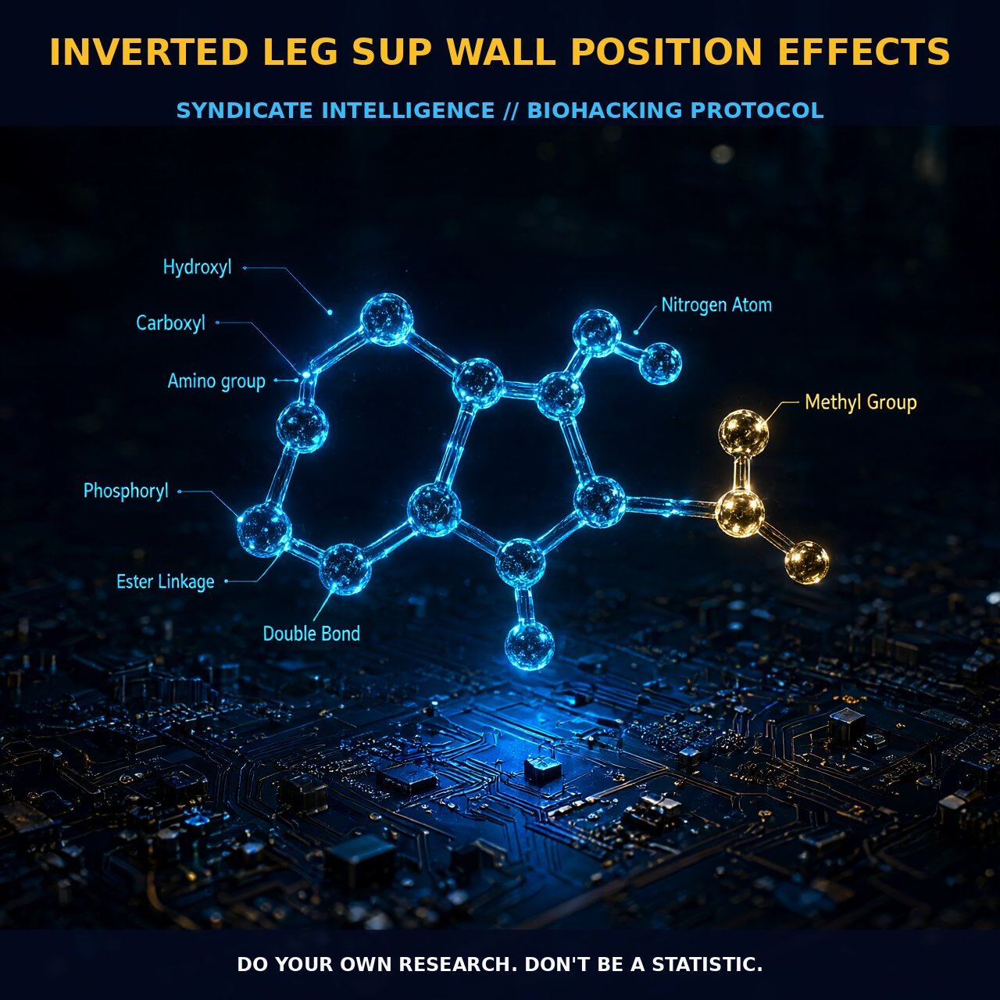

Enhancing Circulation and Relaxation with the Inverted Legs

The Mechanism
The inverted legs up wall position, also known as Viparita Karani in yoga, involves placing your legs against a vertical surface while your torso and head rest on the ground. This unique gravitational pull on the body, particularly on the lower extremities and the cardiovascular system, creates a redistribution of blood and fluids.
When the legs are elevated, blood flow is directed towards the lower extremities, enhancing the venous return to the heart. This gravitational pull helps reduce venous pooling in the lower extremities and improves circulation. The venous and lymphatic systems play crucial roles in this process, as they transport fluids and waste products.
The mechanics of the inverted legs up wall position also involve the autonomic nervous system, particularly the parasympathetic branch responsible for the 'rest and digest' response. The elevation of the legs can stimulate the vagus nerve, leading to a reduction in heart rate and blood pressure. Deep breathing techniques and mindfulness exercises further enhance this parasympathetic activation, promoting a state of deep relaxation and improved circulation.
Biological Leverage
The inverted legs up wall position exerts significant biological leverage on the cardiovascular and lymphatic systems. Improved venous return to the heart reduces the workload on the heart and enhances cardiac efficiency. The gravitational pull on the blood vessels in the lower extremities helps to push blood back towards the heart, reducing the burden on the heart.
The lymphatic system, which plays a crucial role in the immune response and the removal of waste products from the tissues, also benefits from this position. The elevation of the legs effectively drains the lymphatic vessels in the lower extremities, reducing lymph fluid accumulation and improving overall lymphatic flow. This can lead to reduced swelling and improved tissue health.
The parasympathetic activation caused by the inverted position leads to a reduction in stress hormones such as cortisol, promoting a state of relaxation and improved immune function.
Tactical Implementation
To implement the inverted legs up wall position effectively, it is important to consider several factors such as duration, frequency, and positioning. Start with a comfortable wall and place a cushion or mat on the ground to support your lower back. Position yourself so that your legs are fully extended against the wall, with your hips slightly higher than your head. This ensures optimal distribution of gravitational force and effective redirection of blood flow.
Begin with short sessions of 5 to 10 minutes and gradually increase the duration as you become more comfortable with the position. The best time to practice this position is in the afternoon or early evening to reduce fatigue and promote relaxation before bedtime. However, it can also be done in the morning to invigorate the body and enhance circulation.
Maintain a straight spine and relaxed breathing throughout the session to maximize the benefits. You can enhance the effect by combining the position with deep breathing exercises or gentle stretching of the lower extremities.
In terms of stacking, the inverted legs up wall position can be combined with other relaxation techniques such as meditation or light yoga stretches to further enhance parasympathetic activation and promote a deeper state of relaxation. Avoid combining it with high-intensity exercises or activities that may increase blood pressure immediately before or after the session.
Prostar Life Hack
Begin with short sessions of 5 to 10 minutes, gradually increasing the duration as you become more comfortable with the position. Combine the position with deep breathing exercises or light yoga stretches for enhanced benefits.
[ AUTHOR: LEAD TECHNICAL RESEARCHER ]